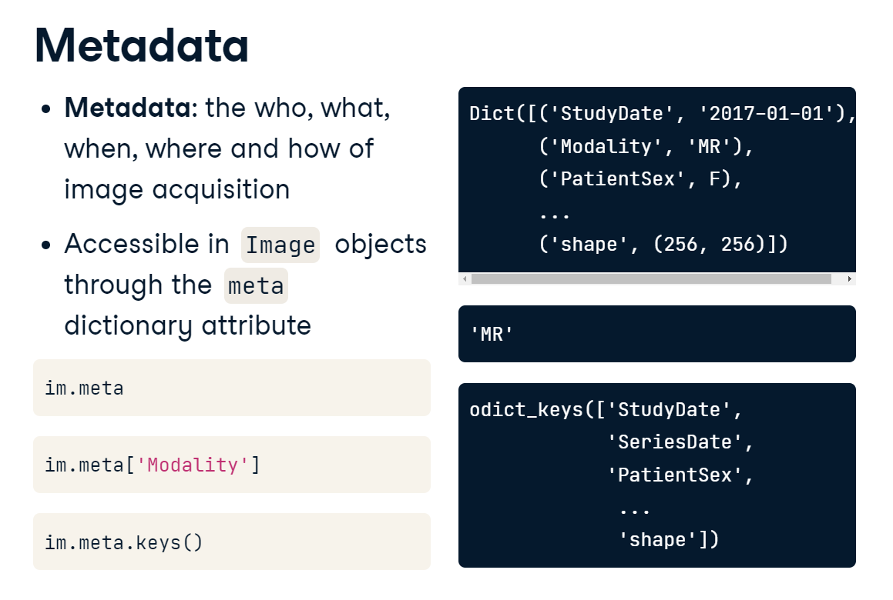
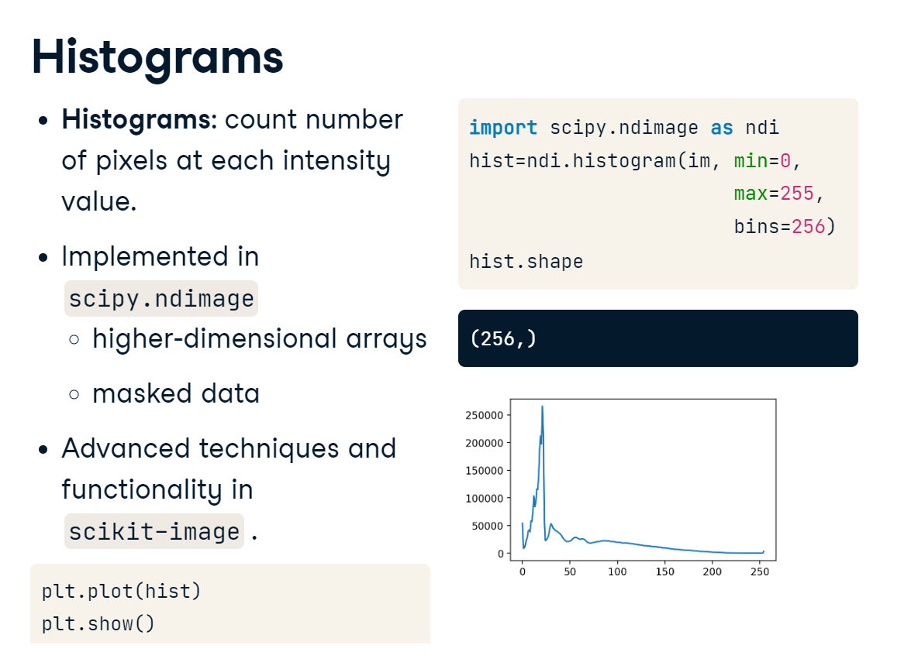
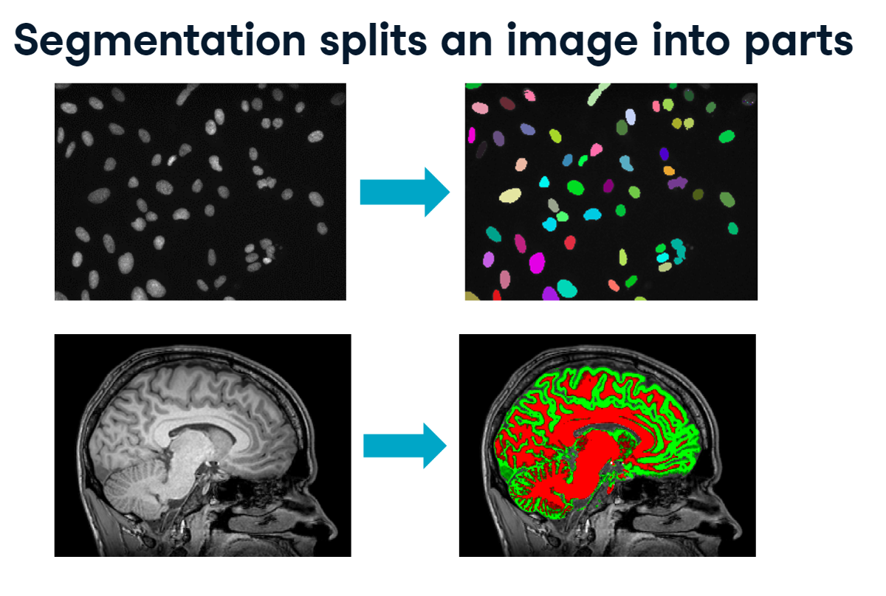

Since the first x-ray in 1895, medical imaging technology has advanced clinical care and opened up new fields of scientific investigation. The amount of imaging data is exploding: there was estimated to be more than three and a half billion terabytes of it in the U.S. alone in 2020. This has created amazing opportunities for analysis: measuring organ shape and size; creating detailed reconstructions of anatomy; analyzing tissue composition; predicting pathology, and so much more. The complexity and variety of the data can make it an intimidating field to jump into.
Fortunately, there are fantastic tools and a wealth of resources to support you. In this blog, we’ll focus on several principles underlying biomedical image analysis. We’ll learn how to explore multidimensional arrays, emphasize important features using masks and filters, extract specific measurements from objects, and compare multiple images or patients. While this only scratches the surface of the field, it will give us a firm foundation for advanced concepts like classification and segmentation. Throughout, we’ll rely on packages in Python’s core scientific computing ecosystem: ImageIO, NumPy, SciPy, and matplotlib. Let’s dive in.
overview.PNG
1. Exploration
Prepare to conquer the Nth dimension! In this section, we’ll learn how to load, build and navigate N-dimensional images using a CT image of the human chest. We’ll also leverage the useful ImageIO package and hone our NumPy and matplotlib skills.
1.1 Image data
1.1.1 Load images
To warm up, let’s load and plot a single image. We can read in images using the ImageIO package. Its imread() function will take a single file and load it as an image object. One useful feature of ImageIO is that it can read DICOM files, the standard format for human medical imaging. The data is read in as an image object, which is a type of NumPy array.
To access specific values from our image, we can slice out a single value or a range of index values along each dimension.
loading_images.PNG
In this section, we’ll work with sections of a computed tomography (CT) scan from The Cancer Imaging Archive. CT uses a rotating X-ray tube to create a 3D image of the target area. The actual content of the image depends on the instrument used: photographs measure visible light, x-ray and CT measure radiation absorbance, and MRI scanners measure magnetic fields.
To warm up, use the imageio package to load a single DICOM image from the scan volume and check out a few of its attributes.
Requirement already satisfied: imageio in /home/stephen137/mambaforge/lib/python3.10/site-packages (2.22.0)
Requirement already satisfied: pillow>=8.3.2 in /home/stephen137/mambaforge/lib/python3.10/site-packages (from imageio) (9.2.0)
Requirement already satisfied: numpy in /home/stephen137/mambaforge/lib/python3.10/site-packages (from imageio) (1.22.4)
Image type: <class 'imageio.core.util.Array'>
Shape of image array: (512, 512)
imageio is a versatile package. It can read in a variety of image data, including JPEG, PNG, and TIFF. But it’s especially useful for its ability to handle DICOM files.
1.1.2 Metadata
Images are always acquired in a specific context. This information is often referred to as metadata. ImageIO loads available metadata into a dictionary, accessible through the meta attribute. This is especially important for DICOM files, which contain a lot of patient and acquisition information. Since meta is a Python dictionary, you can access specific information by indexing it with one of the available keys. This file, for example, includes a modality field. You can also call the keys method to list all of the available metadata.

metadata.PNG
ImageIO reads in data as Image objects. These are standard NumPy arrays with a dictionary of metadata.
Metadata can be quite rich in medical images and can include:
Patient demographics: name, age, sex, clinical information
Acquisition information: image shape, sampling rates, data type, modality (such as X-Ray, CT or MRI)
# Print the available metadata fieldsprint(im.meta.keys())
DICOM files have rich information related to patient and acquisition information, but other image formats can have helpful information as well.
1.1.3 Plot images
Visualization is fundamental to image analysis, and we’ll rely heavily on matplotlib and its imshow() function throughout this course. To draw a simple plot of a 2D image, first, import the PyPlot module from matplotlib. Next, call pyplot.imshow() and pass in the 2D image. If the image does not have color, add cmap="gray" to plot it in grayscale. Next, to reduce clutter, it’s common to turn off the axis ticks, labels, and frame with pyplot. axis off. Finally, call show() to render the image. And, voila: the inside of a human being.
plotting_images.PNG
Perhaps the most critical principle of image analysis is: look at our images!
Matplotlib’s imshow() function gives us a simple way to do this. Knowing a few simple arguments will help:
cmap controls the color mappings for each value. The “gray” colormap is common, but many others are available.
vmin and vmax control the color contrast between values. Changing these can reduce the influence of extreme values.
plt.axis('off') removes axis and tick labels from the image.
import matplotlib.pyplot as plt
# Draw the image in grayscaleplt.imshow(im, cmap="gray")# Render the imageplt.show()
We can set vmin=-200 and vmax=200 to increase the contrast (i.e., the distance between the brightest and darkest colors is smaller than before, and remove the axis ticks and labels.
# Draw the image with greater contrastplt.imshow(im,cmap="gray",vmin=-200, vmax=200)# Remove axis ticks and labelsplt.axis('off')# Render the imageplt.show()
1.2 N-dimensional images
Now that we can load and plot two-dimensional images let’s discuss higher dimensional datasets.
Images come in all shapes and sizes. This makes them versatile, but also complex. A standard grayscale image is the simplest type: it’s an array that can be indexed by rows and columns.
array_slicing.PNG
3D images cover a volume of space rather than just a single plane. This volumetric data is useful because it can better capture the complexities of the human body, but it can be difficult to visualize because it can’t be summarized in a single plot.
Color images are also three dimensional. RGB images, for example, have three color channels that, when rendered by matplotlib or other image viewers, express a wide range of colors.
Movies, or time series data, include a temporal dimension, showing how each element changes over time. Like the planar dimension for 3D volumes, the temporal dimension is put first by convention.
1.2.1 Stack images
Just as a 2D image is a stack of 1-dimensional vectors, 3D, 4D and even higher-dimensional images can be thought of as stacks of simpler ones. Let’s illustrate this by creating a 3D volume from a few 2D images. First, we’ll load ImageIO and NumPy. Then, we’ll read in three slices of a chest CT scan. Each of these slices is an array with 512-row elements by 512 column elements. Now, we can feed a list of these three images into NumPy’s stack() function to create a 3D volume. If we look at our new “vol” array, we see that it contains a third dimension with three elements along it, but the row and column dimensions are the same as before
array_stacks.PNG
We will use NumPy’s stack() function to combine several 2D arrays into a 3D volume. By convention, volumetric data should be stacked along the first dimension (axis=0): vol [plane, row, col].
import numpy as np# Read in each 2D imageim1 = imageio.imread('Data/chest-220.dcm')im2 = imageio.imread('Data/chest-221.dcm')im3 = imageio.imread('Data/chest-222.dcm')# Stack images into a volumevol = np.stack([im1,im2,im3], axis=0)print('Volume dimensions:', vol.shape)
Volume dimensions: (3, 512, 512)
For large volumes, we can use a for loop to quickly generate our image list.
1.2.2 Load volumes
ImageIO’s volread() function is capable of reading volumes directly from disk, whether your images are stored in their own folder, or if the dataset is already multi-dimensional. In this example, we have a folder named “chest data,” which contains 50 slices of a 3D volume. We simply have to pass the folder name to volread(), and it will assemble the volume for us. Since these are DICOM images, the function actually checks the available metadata to make sure that the images are placed in the correct order. Otherwise, it will default to alphabetical order. Displaying the shape attribute shows us that we have 50 images stacked together.
For illustrative purposes let’s read in an entire volume of brain data from the “Data” folder, which contains 5 DICOM images.
# specify directory and file patternfoldername ='Data'pattern ='*.dcm'# Load the "Data" directoryvol = imageio.volread(foldername, pattern)# Print image attributesprint('Available metadata:', vol.meta.keys())print('Shape of image array:', vol.shape)
Using volread() to load image volumes can be faster and more reliable than loading them in image-by-image. It also preserves image metadata where possible.
1.2.3 Field of view
When analyzing images, keep in mind that the data is only a representation of real, physical space. The information in our images is limited to the number of elements in it. This is known as the array shape in NumPy and is always available as an attribute. The amount of space covered by each element is the sampling rate, and it can vary along each dimension. For DICOM images, the sampling rate is usually encoded in the metadata. For other types of image formats, such as JPEG and PNG, you may need to find it elsewhere. The field of view is the total amount of space covered along each axis. It is the product of the shape and sampling rate. Understanding the difference between these concepts is important, and we’ll return to it throughout this blog.
The amount of physical space covered by an image is its field of view, which is calculated from two properties:
Array shape, the number of data elements on each axis. Can be accessed with the shape attribute.
Sampling resolution, the amount of physical space covered by each pixel (mm). Sometimes available in metadata (e.g., meta[‘sampling’]).
Let’s have a go at calculating the field of view for our volume.
vol.shape
(5, 512, 512)
vol.meta['sampling']
(3.269999999999996, 0.976562, 0.976562)
Multiply the array shape and sampling resolution along each axis
(5 x 3.269999999999996, 512 x 0.976562, 512 x 0.976562)
which gives (16.35, 500, 500)
1.3 Advanced plotting
Efficiently and comprehensively visualizing your data is key to successful image analysis.
To plot N-dimensional data slice it!
Consider this loaf of bread - it’s a 3D volume that looks absolutely delicious. But what’s inside the loaf? Is it bananas? Blueberries? Walnuts? This single 2D image cannot answer the question. Instead, you would have to slice it up and look at those pieces individually. The concept for 3D images is exactly the same: to explore your multidimensional array you must visualize many simpler slices of it.
1.3.1 Generate subplots
It’s inefficient to plot each of these slices one by one. A better way is to display many at once. To do this, we’ll leverage PyPlot’s subplots() function, which creates a grid of axis objects based on the number of rows and columns you specify. When you call pyplot.subplots(), it returns a figure object and an array of axis handles. In this case, the axes array has a shape of one by three. To draw images on each subplot, we will call the imshow() function directly from the axis object, rather than calling it through PyPlot. Here, we’re plotting the first slice of vol with a gray colormap. After the first slice is drawn, repeat the process for the other slices. Finally, we can clean up and render the figure. Just like before, we want to turn off the ticks and labels by calling the axis() method. However, since we will do the same thing to each subplot, a for loop is more efficient than writing down each command. If you had many images to draw, you could insert the drawing step into a for loop as well. Finally, we render the image using pyplot.show().
subplots.PNG
# Initialize figure and axes gridfig, axes = plt.subplots(nrows=2, ncols=1)# Draw an image on each subplotaxes[0].imshow(im1, cmap='gray')axes[1].imshow(im2, cmap='gray')# Remove ticks/labels and renderaxes[0].axis('off')axes[1].axis('off')plt.show()
For even more rapid visualization, we can use a large number of subplots and loop through our axes and images.
1.3.2 Slice 3D images
The simplest way to plot 3D and 4D images by slicing them into many 2D frames. Plotting many slices sequentially can create a “fly-through” effect that helps you understand the image as a whole.
To select a 2D frame, pick a frame for the first axis and select all data from the remaining two: vol[0, :, :]
For this illustration, let’s use a for loop to plot every 2nd slice of vol on a separate subplot.
# Print image attributesprint('Available metadata:', vol.meta.keys())print('Shape of image array:', vol.shape)# Plot the images on a subplots array fig, axes = plt.subplots(nrows=1, ncols=2)# Loop through subplots and draw imagefor ii inrange(2): im = vol[ii*2, :, :] axes[ii].imshow(im, cmap='gray') axes[ii].axis('off')# Render the figureplt.show()
When selecting frames, any trailing : symbols are implicitly selected. For example, vol[5] is the same as vol[5,:,:]. We will follow this simpler convention moving forward.
1.3.3 Plot other views
There are actually multiple ways you can slice a 3D volume into 2D images. The simplest way is to choose a frame along the first dimension and plot the second and third against each other.
If you instead selected a slice along the row dimension, you would get a second perspective. In this case, we are plotting head-to-toe versus left-to-right.
Finally, you could plot the first and second axes against each other, yielding a third view. When looking at human anatomy, these different views or planes have special names: - axial - coronal - sagittal
Knowing in which plane a dataset is stacked can help you navigate more efficiently.
Any two dimensions of an array can form an image, and slicing along different axes can provide a useful perspective. However, unequal sampling rates can create distorted images.
distorted.PNG
Many datasets do not have equal sampling rates across all dimensions. In these cases, you will want to stretch the pixels along one side to account for the differences. The amount of stretching needed is determined by the aspect ratio. Here we’ve decided to plot a slice with data from the first and second dimensions. To determine the aspect ratio, we first get the sampling rates along each dimension from the metadata dictionary. Then, we divide the sampling rate of the first dimension by the sampling rate of the second. When we call imshow(), we pass this ratio to the aspect argument.
This results in a properly proportioned image. Failing to adjust the aspect would have resulted in a distorted image.
aspect_ratio.PNG
To illustrate this, let’s plot images that slice along the second and third dimensions of vol, and explicitly set the aspect ratio to generate undistorted images.
Next, we’ll begin to manipulate images and extract salient features from them.
2. Masks and Filters
In this section, we’ll discuss masks and filters, two techniques that emphasize important features in images. To leverage them well, we must have a thorough understanding of your data’s distribution of intensity values.
2.1.1 Intensity
In this section, we will work with a hand radiograph from a 2017 Radiological Society of North America competition. X-ray absorption is highest in dense tissue such as bone, so the resulting intensities should be high. Consequently, images like this can be used to predict “bone age” in children.
Pixels and voxels
The building blocks of medical images are pixels and voxels. Each of these elements has two properties: an intensity value and a location in space. The meaning of the intensity value depends on the imaging modality. For example, pixels in this x-ray image, or radiograph, are brighter in dense tissue such as bone, because it absorbs more radiation than other types.
Data types and image size
The range of values allowed in an image is determined by its data type. Generally, lower-bit integers are preferred for images, since memory usage increases dramatically for larger data types. If all values in the image are positive, then unsigned integers can cover the widest range of values while taking up the least amount of memory. You will commonly see images scaled by the value 255, which is the maximum value for 8-bit unsigned integers. You can see the difference in memory usage by calling the size attribute of the array. The foot x-ray we just saw is read by ImageIO as an 8-bit unsigned integer. It takes up about 153 kB. If we convert it to a 64-bit integer, however, the same information now takes up more than a megabyte of space.
To start, let’s load the image and check its intensity range.
The image datatype determines the range of possible intensities: e.g., 8-bit unsigned integers (uint8) can take values in the range of 0 to 255. A colorbar can be helpful for connecting these values to the visualized image.
# custom functiondef format_and_render_plot():'''Custom function to simplify common formatting operations for exercises. Operations include: 1. Turning off axis grids. 2. Calling `plt.tight_layout` to improve subplot spacing. 3. Calling `plt.show()` to render plot.''' fig = plt.gcf()for ax in fig.axes: ax.axis('off') plt.tight_layout() plt.show()
# Load the hand radiographim = imageio.imread('Data/hand.png')print('Data type:', im.dtype)print('Min. value:', im.min())print('Max value:', im.max())# Set the tick intervalimport matplotlib.ticker as tickermin_val =0max_val = np.max(im)tick_interval =50tick_vals = np.arange(min_val, max_val + tick_interval, tick_interval)# Plot the grayscale imageplt.imshow(im, vmin=0, vmax =255, cmap='gray')colorbar = plt.colorbar()colorbar.set_ticks(tick_vals)plt.show()
Data type: uint8
Min. value: 3
Max value: 224
Although only a crude descriptor, the range of intensities can help you get a quick feel for your image’s content.
2.1.2 Histograms
Histograms summarize the distribution of intensity values in an image. They bin each pixel by its value and then count each bin. SciPy, and especially its Ndimage module, contain some essential tools for image analysis. We’ll dig deeper into SciPy throughout this blog. To generate a histogram for the foot x-ray, we first import SciPy’s Ndimage module as ndi. Then, we call ndimage.histogram() and pass in our array. The histogram() function requires us to specify values for the minimum, maximum, and the number of bins. Since our image is an 8-bit unsigned integer, our range is from 0 to 255, with 256 possible values. This returns a 256 element vector with the count of pixels at each intensity value. Plotting the data as a line plot reveals a highly skewed distribution, with many low values and a wider range of high values.

histograms.PNG
Equalization
Skewed distributions are common in medical images: background intensities are usually low and take up a lot of image space. There are ways to modify the intensity distribution. For example, histogram equalization redistributes values based on their abundance in the image. We can perform equalization with the aid of the cumulative distribution function, which shows the proportion of pixels that fall within a given range. Here, we can see that about half the pixels have values less than 32. To equalize the image, we could redistribute these intensity values until they are more evenly represented.
Equalizing the histogram is actually pretty straightforward. First, we generate the histogram. Then, we calculate the cumulative distribution function by taking the rolling sum of the histogram and dividing it by the total number of pixels. Then, we apply the function to our image and rescale by 255. Plotting the original and equalized image shows that we have increased the pixel intensities for several areas. This has made our foot stand out more clearly, but it has also given extra weight to some background areas. For biomedical applications, global equalization, such as this, should be done with caution, but the principle of redistributing intensity values is a useful one to keep in mind.
equalization.PNG
equalization_result.PNG
The area under a histogram is called the cumulative distribution function. It measures the frequency with which a given range of pixel intensities occurs.
To illustrate, let’s describe the intensity distribution in im by calculating the histogram and cumulative distribution function and displaying them together.
# custom functiobdef format_and_render_plot():'''Custom function to simplify common formatting operations for exercises. Operations include: 1. Turning off axis grids. 2. Calling `plt.tight_layout` to improve subplot spacing. 3. Calling `plt.show()` to render plot.''' fig = plt.gcf()for ax in fig.axes: ax.legend(loc='center right') plt.show()# Import SciPy's "ndimage" moduleimport scipy.ndimage as ndi # Create a histogram, binned at each possible valuehist = ndi.histogram(im, min=0, max=255, bins=256)# Create a cumulative distribution functioncdf = hist.cumsum() / hist.sum()# Plot the histogram and CDFfig, axes = plt.subplots(2, 1, sharex=True)axes[0].plot(hist, label='Histogram')axes[1].plot(cdf, label='CDF')format_and_render_plot()
We can see the data is clumped into a few separate distributions, consisting of background noise, skin, bone, and artifacts. Sometimes we can separate these well with global thresholds (foreground/background); other times the distributions overlap quite a bit (skin/bone).
2.2 Masks
We can restrict our analysis to only the most important parts of an image by creating and applying image masks.
A mask is a Boolean array which serves as a screen to remove undesirable pixels. Masks must retain the same dimensions as the original image so that the two can be overlaid.
Creating masks One way to create masks is to find all pixels in an image that satisfy a certain condition. For example, let’s create a three by three array of ascending values. If we test for values greater than 5, we will return a three by three array where the values are True when they greater than 5, and False when they are less. Logical operations include comparisons and tests of equivalence. We can also chain operations together to select a specific range of pixels.
Let’s look at this in action. Recall that the foot x-ray we have been working with has an intensity distribution like this. We see that there is a steep drop-off around 32, so let’s select values greater than this. This seems to do quite a good job highlighting the foot.
Bone is the highest intensity tissue in an x-ray, and if we increase our threshold to 64, we create a rough bone mask. Finally, we can create a mask of non-bone tissue by finding pixels that are in mask 1 and not in mask 2. The selected pixels are in the foot but are not part of the bone. They seem to be related to skin and other tissue.
Applying masks Masks can be used to screen images, allowing the original values through except where the mask evaluates to False. NumPy’s where() function is useful for this purpose. where() applies a condition on each pixel, and instead of returning a Boolean, it returns x when True and y when False. Each of the arguments can be either arrays or single values, allowing for great flexibility. To see this in action, first import NumPy. Let’s try to filter out pixels that are not part of the bone. We’ll call “where im is greater than 64, return im, otherwise return 0”. Plotting the masked image shows that only the high-intensity values remain, and these are mostly bone.
Tuning masks Data is noisy, so your masks will rarely be perfect. Fortunately, there are simple ways to improve them. To increase the size of your mask, you can add pixels around the edges, a process known as dilation. This can help when the edges are fuzzy or to make sure you don’t accidentally mask out pixels you actually care about. To do this, we call the binary_dilation() function, which converts all background pixels adjacent to the mask into mask pixels.
The opposite operation, “binary erosion” can be implemented in the same manner. Use it to cut the mask down to its more central pixels. You can perform these tuning operations many iterations to make your mask much larger or smaller. You can also combine the operations to open or close holes in your mask.
Masks are the primary method for removing or selecting specific parts of an image. They are binary arrays that indicate whether a value should be included in an analysis. Typically, masks are created by applying one or more logical operations to an image.
To illustrate, we will try to use a simple intensity threshold to differentiate between skin and bone in the hand radiograph.
# using loadtxt()im_equalized = np.loadtxt("Data/hand_equalized.csv", delimiter=",", dtype=float)display(im_equalized)
def format_and_render_plot():'''Custom function to simplify common formatting operations for exercises. Operations include: 1. Turning off axis grids. 2. Calling `plt.tight_layout` to improve subplot spacing. 3. Calling `plt.show()` to render plot.''' fig = plt.gcf()for ax in fig.axes: ax.axis('off') plt.tight_layout() plt.show()
# Create skin and bone masksmask_skin = (im_equalized >=45) & (im_equalized <145)mask_bone = im_equalized >=145# Plot the skin (0) and bone (1) masksfig, axes = plt.subplots(1,2)axes[0].imshow(mask_skin, cmap='gray')axes[1].imshow(mask_bone, cmap='gray')format_and_render_plot()
It’s possible to chain logic together to make some quite complex masks.
2.2.2 Apply a mask
Although masks are binary, they can be applied to images to filter out pixels where the mask is False.
NumPy’s where() function is a flexible way of applying masks. It takes three arguments:
np.where(condition, x, y)
condition, x and y can be either arrays or single values. This allows you to pass through original image values while setting masked values to 0.
Let’s practice applying masks by selecting the bone-like pixels from the hand x-ray.
# custom functiondef format_and_render_plot():'''Custom function to simplify common formatting operations for exercises. Operations include: 1. Turning off axis grids. 2. Calling `plt.tight_layout` to improve subplot spacing. 3. Calling `plt.show()` to render plot.''' fig = plt.gcf() fig.axes[0].axis('off') plt.tight_layout() plt.show()# Screen out non-bone pixels from "im"mask_bone = im_equalized >=145im_bone = np.where(mask_bone, im_equalized, 0)# Get the histogram of bone intensitieshist = ndi.histogram(im_bone, min=1, max=255, bins=255)# Plot masked image and histogramfig, axes = plt.subplots(2, 1)axes[0].imshow(im_bone, cmap='gray')axes[1].plot(hist)format_and_render_plot()
Sometimes simpler methods for applying a mask such as multiplication (e.g., im * mask_bone) will meet your needs, but np.where() is an excellent tool to have in your arsenal.
2.2.3 Tune a Mask
Imperfect masks can be tuned through the addition and subtraction of pixels. SciPy includes several useful methods for accomplishing these ends. These include:
binary_dilation: Add pixels along edges
binary_erosion: Remove pixels along edges
binary_opening: Erode then dilate, “opening” areas near edges
binary_closing: Dilate then erode, “filling in” holes
To illustrate, we will create a bone mask then tune it to include additional pixels.
Dilation, erosion, and closing are useful techniques when you want to fine-tune your masks.
2.3 Filters
So far, we have only considered the images as a whole. However, we can combine intensity and spatial information by employing convolutional filters.
filters.PNG
Filters
Two common examples of filtering are sharpening and smoothing.
Sharpening sharp changes are enhanced, exaggerating the differences between pixels.
Smoothing emphasizes large intensity patterns in an image by reducing variability between neighboring pixels. Essentially, it suppresses noise by blurring the image.
Let’s look more closely at how this is accomplished.
2.3.1 Filter convolutions
Convolution with a sharpening filter
sharpening.PNG
Here we have a five by five input array, where all the values are one except for the center value of 2. To get a sharpened value for the center pixel, we would first define a set of filter weights, also called a kernel. Then, we would select a window of input data of the same size as our kernel. In this case, the filter will highly weight the center pixel and down-weight the adjacent pixels.
sharpening_result.PNG
To perform convolution, we multiply these two matrices element-wise, and then we sum them up. In the top-left corner, we have an input value of 1 times a weight of 0, an input value of 1 times a weight of negative 1, and so on. We then sum all these products to get a new, sharpened value for the center pixel of our input image. In this case, it’s been increased from two to six.
Let’s see how this works on a full-size image.
CNN.PNG
On the left is a random 2D array; on the right, we have an empty output image that we will create. In between is the sharpening kernel.
Starting from the top-left corner of the input image, we select the values surrounding the origin pixel. We then multiply each element in this selection by the kernel weights and add them together to get the filtered value. We take one step over to the next element, multiply the input window by the kernel, and repeat the process for each pixel in the image.
kernel.PNG
This results, in this case, in a sharpened image.
sharpened.PNG
Image convolution
We can apply custom filters using the convolve() function. First, we import packages and load the foot x-ray. Next, we create the kernel. In this case, let’s average the center pixel with its neighbors to smooth out variability between pixels. After filtering, the major patterns will remain, but subtle variation between pixels will be dampened. Next, we call ndimage.convolve() and pass in the image and weights. This produces a smoothed output image of the same size as our input.
image_convolution.PNG
To illustrate filter convolutions, let’s smooth the hand radiograph. First, specify the weights to be used. (These are called “footprints” and “kernels” as well.) Then, convolve the filter with im and plot the result.
import imageio.v2 as imageioimport scipy.ndimage as ndi import matplotlib.pyplot as pltim = imageio.imread('Data/hand.png')
# Create a three by three array of filter weights# Set each element to 0.11 to perform mean filtering (also called "uniform filtering")weights = [[0.11, 0.11, 0.11], [0.11, 0.11, 0.11], [0.11, 0.11, 0.11]]# Convolve the image with the filterim_filt = ndi.convolve(im, weights)# Plot the imagesfig, axes = plt.subplots(1,2)axes[0].imshow(im, cmap='gray')axes[1].imshow(im_filt, cmap='gray')plt.show()
The size and pattern of the filter weights control the effect it will have on our image.
2.3.2 Filter functions
Filtering can also employ functions other than convolutional kernels, such as the mean, median, and maximum. SciPy has several of these functions built-in. Filter kernels do not have to be 3 x 3; they can be as large as you want. Here, we apply a 10 x 10 median filter to the foot image. You can see it does quite a nice job of smoothing out the variations in intensity.
filtering_functions.PNG
The median filter will return the median value of the 3x3 neighborhood. Note that the values on the edges will vary based on the mode setting of your filter.
2.3.3 Smoothing
Gaussian filtering
The Gaussian filter is useful for smoothing data across larger areas. It blurs activation based on a Gaussian, or normal, distribution around the filtered pixel. Basically, the filter weights dissipate in a circular pattern as you get further from the center. The width of the distribution is controlled by the sigma parameter. Applying a Gaussian filter can be a great way to reduce noise, but with very large sigma values, you’ll lose a lot of detail in your image.
gaussian.PNG
Let’s illustrate the effects of applying Gaussian filters to the foot x-ray before creating a bone mask.
# Smooth "im" with Gaussian filtersim_s1 = ndi.gaussian_filter(im_equalized, sigma=1)im_s3 = ndi.gaussian_filter(im_equalized, sigma=3)# Draw bone masks of each imagefig, axes = plt.subplots(1,3)axes[0].imshow(im_equalized >=145, cmap='gray')axes[1].imshow(im_s1 >=145, cmap='gray')axes[2].imshow(im_s3 >=145, cmap='gray')plt.show()
Many analyses can benefit from an initial smoothing of the data.
2.4 Feature detection
Filters aren’t just useful for blurring and smoothing. They can also be used as detectors for features of interest, such as edges.
edge_detector_kernel.PNG
If we want to construct a filter kernel that will emphasize edges, what should it look like?
Recall that when we perform convolution, it creates a new image that reflects what the filter looks like: a smoothing filter itself has a smooth gradient, whereas a sharpening filter has a sudden change in intensity. An edge is a change in intensity along an axis. Sharp edges, for example, between the skull and background in this MRI image, have very high contrast. The filter should reflect this.
2.4.1 Detect edges
Let’s see if we can make this work. We start by loading the foot x-ray. Next, we construct our kernel: to look for areas that have a change in intensity from top to bottom. We can weight the top row to positive 1 and the bottom row to negative 1.
Essentially, this filter calculates the difference between the top and bottom rows, returning values far from 0 when there is a sudden change in intensity. Then, we convolve the image with the filter using SciPy.
edge_detector_convolution.PNG
Plotting the image, it’s clear that our detector has done a fine job of highlighting some edges. But note two things:
This is a horizontal edge detector because it is looking for differences between the top and bottom values at each point. If you look at the vertical edges in the filtered image, you’ll see that they have relatively low values compared to the top and bottom of the foot.
There are both positive and negative values. This happens because some edges have high-intensity values on top and low values on bottom, whereas others have the opposite. The direction of this difference determines whether the convolution yields a positive or negative value.
To illustrate, let’s create a vertical edge detector and see how well it performs on the hand x-ray (im).
def format_and_render_plot():'''Custom function to simplify common formatting operations for exercises. Operations include: 1. Turning off axis grids. 2. Calling `plt.tight_layout` to improve subplot spacing. 3. Calling `plt.show()` to render plot.''' fig = plt.gcf()for ax in fig.axes: ax.axis('off') plt.tight_layout() plt.show()
# Set weights to detect vertical edgesweights = [[1,0,-1], [1,0,-1], [1,0,-1]]# Convolve "im" with filter weightsedges = ndi.convolve(im_equalized, weights)# Draw the image in colorplt.imshow(edges, cmap='seismic', vmin=-150, vmax=150)plt.colorbar()format_and_render_plot()
2.4.2 Sobel filters
There are many possible configurations for edge detectors. A very common one is the Sobel operator, which provides an extra weight to the center pixels of the kernel. The filter can be rotated to make it sensitive to either horizontal or vertical edges.
sobel_filters.PNG
Implementing the Sobel filter is just like implementing other filters: call ndimage.sobel(), then pass in the image and the orientation of the filter.
sobel_filters_ndi.PNG
To remedy the fact that we have multiple edge maps with positive and negative values, we can create a composite edge map. Recall the Pythagorean Theorem - when you have two perpendicular vectors, you can calculate their distance by taking the root of their squares.
sobel_filter_magnitude.PNG
This is useful in our situation: if we apply the Sobel filter along the first and second axes, we can then use these as input to the Pythagorean Theorem to get a composite, positively weighted edge image. This nicely highlights intensity changes in our image, and we can use these features for masking or object detection in later analysis steps.
Let’s improve upon our previous detection effort by merging the results of two Sobel-filtered images into a composite edge map.
Excellent. In this section we learned how to modify and extract parts of images based on their location and intensity. We are now ready to begin analyzing individual images!
3. Measurement
In this chapter, we’ll get to the heart of image analysis: object measurement. Using a 4D cardiac time series, we’ll determine if a patient is likely to have heart disease. Along the way, we’ll learn the fundamentals of image segmentation, object labeling, and morphological measurement.
3.1 Objects and labels
In this section, we’ll discuss how we can measure one or more component parts of our image. We’ll start by learning how to label objects.
Segmentation is the process of splitting an image into separate objects. Since whole careers can be spent developing segmentation techniques, we will focus mostly on how to analyze the resulting objects.

segmentation.PNG
3.1.1 Segment the heart
Sunnybrook Cardiac Database
We will analyze cardiac magnetic resonance imaging data from the Sunnybrook Cardiac Database. Each Sunnybrook dataset contains a 3D time series of a person’s heart over the course of a single heartbeat. The end goal is to measure the proportion of blood that’s pumped out of the left ventricle, a measure known as the ejection fraction.
In this image, the left ventricle is the circular cavity in the center. Abnormal ejection fractions can indicate urgent health issues.
ejection_fraction.PNG
Our first step towards calculating the ejection fraction is to segment the left ventricle from the rest of the image. For these MRI data, fluid-filled areas have high-intensity values. So, one approach is to take the original image, filter it to reduce noise and smooth edges, then mask it to select pixels with relatively high values.
filter_and_mask.PNG
This does a good job of segmenting the left ventricle, but now we need to remove the pixels that are part of other objects.
We can do this using SciPy’s label() function. First, we’ll create the above mask by reading in the file, applying a small Gaussian filter, then masking pixels with intensities lower than 150. Next, we “label” the mask. The labeling algorithm treats 0 values as background pixels, and then it looks for all of the objects that are separated by background. It then returns an array where each object has been indexed, as well as the number of objects detected. It seems we have 14 distinct objects in this image. Plotting the labels with the rainbow colormap shows that the circular left ventricle region in the center has been assigned a unique label value.
import imageio.v2 as imageioimport matplotlib.pyplot as pltimport numpy as npimport scipy.ndimage as ndi
And, let’s focus on one particular image :
# load array from csvheartbeat= np.loadtxt('Data/heartbeat.csv', delimiter =',' , dtype=float)
def format_and_render_plot():'''Custom function to simplify common formatting operations for exercises. Operations include: 1. Turning off axis grids. 2. Calling `plt.tight_layout` to improve subplot spacing. 3. Calling `plt.show()` to render plot.''' fig = plt.gcf() plt.tight_layout() plt.show()# Set the tick intervalimport matplotlib.ticker as tickermin_val =0max_val =160tick_interval =20tick_vals = np.arange(min_val, max_val + tick_interval, tick_interval)# Plot the grayscale imageplt.imshow(heartbeat, vmin=min_val, vmax = max_val, cmap='gray')colorbar = plt.colorbar()colorbar.set_ticks(tick_vals)format_and_render_plot()
The full image is a 3D time series spanning a single heartbeat. These data are used by radiologists to measure the ejection fraction: the proportion of blood ejected from the left ventricle during each stroke.
Illustration
To begin, segment the left ventricle from a single slice of the volume (heartbeat). First, we’ll filter and mask the image; then we’ll label each object with ndi.label().
Extract a labeled array and the number of labels using ndi.label().
# Label the objects in "mask"labels, nlabels = ndi.label(mask)print('Num. Labels:', nlabels)
Num. Labels: 26
Plot the labels array on top of the original image. To create an overlay, use np.where to convert values of 0 to np.nan. Then, plot the overlay with the rainbow colormap and set alpha=0.75 to make it transparent.
# Create a `labels` overlayoverlay = np.where(labels!=0, labels, np.nan)# Use imshow to plot the overlayplt.imshow(overlay, cmap='rainbow', alpha=0.75)format_and_render_plot()
Robust image segmentation is an entire research domain, but the simple principle is to leverage intensity and location information to differentiate objects of interest from the background. Once labeled, the objects can be manipulated easily.
3.1.2 Select objects
We can now select individual objects by referencing their index value. To select pixels in the first object, you would use “where labels is 1, return the value from im, else return 0”. Alternatively, you can select a number of labels meeting a condition. Calling “where labels is less than 3, return im, else 0” will select pixels from the first and second objects.
label_selection.PNG
Labels are like object “handles” - they give you a way to pick up whole sets of pixels at a time. To select a particular object:
Find the label value associated with the object.
Create a mask of matching pixels.
Illustration
For this exercise, create a labeled array from the provided mask. Then, find the label value for the centrally-located left ventricle, and create a mask for it.
When running ndi.label(), the image is traversed from top-left to bottom right, so the generated label value could change depending on how many objects are detected. You may need to plot your labeled image to get the appropriate region.
3.1.3 Extract objects
A bounding boxis the range of indices along each axis which completely enclose an object. You can use the bounding box to extract objects from the larger image. The find_objects() function can create these bounding boxes for you.
bounding_box.PNG
When you run find_objects() on a labeled array, it will return a list of bounding boxes. Each item in the returned list is a tuple of index ranges - one slice for each dimension. Indexing the original image using one of these boxes will yield an image cropped to that object. You could then analyze each of these arrays individually.
ndi_find_objects.PNG
Extracting objects from the original image eliminates unrelated pixels and provides new images that can be analyzed independently.
The key is to crop images so that they only include the object of interest. The range of pixel indices that encompass the object is the bounding box.
Illustration
To illustrate, we will use ndi.find_objects() to create a new image containing only the left ventricle.
Create the labels array from mask, then create a mask left ventricle pixels. (Use the coordinates 128, 128 to find the left ventricle label value.)
Find the bounding box indices for lv_mask Print the number of objects found and the values for the first box.
# Find bounding box of left ventriclebboxes =ndi.find_objects(lv_mask)print('Number of objects:', len(bboxes))print('Indices for first box:', bboxes[0])
Number of objects: 1
Indices for first box: (slice(107, 149, None), slice(116, 162, None))
Select the portion of im that is within the left ventricle bounding box, and plot the cropped image.
# Crop to the left ventricle (index 0)im_lv = im[bboxes[0]]# Plot the cropped imageplt.imshow(im_lv, cmap='gray')plt.axis('off')format_and_render_plot()
di.find_objects() becomes extremely useful when dealing with 3-dimensional objects that are harder to view at a glance.
3.2 Measuring intensity
Once objects have been segmented from the background, their properties can be efficiently measured using tools within SciPy.
For this section, we’ll step up to measuring a full three-dimensional volume.
cardiac_labels.PNG
We have segmented this volume into two parts:
label 1 is the left ventricle, shown here in purple.
label 2 is a circular section from the middle of the image, which will be useful for comparison.
3.2.1 Functions
SciPy has optimized many of the most common descriptive functions for image data, including the mean, median, and standard deviation.
functions.PNG
These functions summarize the array across all dimensions of an image, whether it be 2D, 3D, 4D, or more. They are especially useful when you have a labeled image because you can apply the function to every object independently with a single call. For custom calculations, you can also use the labeled_comprehension() function to summarize your data.
Which arguments you specify when you call measurement functions determines the pixels used for the calculation.
Here, we have loaded the MRI volume and its corresponding labels. To get the mean intensity of the entire image, simply call ndimage.mean() with the original volume. If you provide a mask or a labeled array, you will restrict the analysis to all non-zero pixels. However, if you provide a set of labels and an index value, you can get the mean intensity for a single label. On the other hand, if you pass a list of values to the index argument, the function will return a list of mean values - one for each object specified.
Measure variance
SciPy measurement functions allow you to tailor measurements to specific sets of pixels:
Specifying labels restricts the mask to non-zero pixels.
Specifying index value(s) returns a measure for each label value.
Illustration
For this exercise, we will calculate the intensity variance of vol with respect to different pixel sets. We have provided the 3D segmented image as labels: label 1 is the left ventricle and label 2 is a circular sample of tissue.
vol = np.asarray(
# Variance for all pixelsvar_all = ndi.variance(vol, labels=None, index=None)print('All pixels:', var_all)# Variance for labeled pixelsvar_labels = ndi.variance(vol, labels)print('Labeled pixels:',var_labels)# Variance for each objectvar_objects = ndi.variance(vol, labels, index=[1,2])print('Left ventricle:', var_objects[0])print('Other tissue:', var_objects[1])
<script.py> output: All pixels: 840.4457526156154 Labeled pixels: 2166.5887761076724 Left ventricle: 1123.4641972021984 Other tissue: 1972.7151849347783
Intensity values are based on tissue properties and the imaging modality. Areas that contain many types of tissue will have high variance because there are many different types sampled. Most of the background values have the same value. Even though we don’t care about these values, they make the “global variance” much lower than those encompassing in tissue.
3.2.2 Separate histograms
This technique can be applied to some other SciPy tools, including the histogram function. In the previous chapter, we simply passed in our image array and then specified the minimum value, maximum value, and the number of bins to use. However, if you also include a label array and indices, ndimage.histogram() will return distributions for each of the selected labels.
object_histogram.PNG
Plotting these object-level histograms is a great way to evaluate your segmentation. If you see very wide distributions or multiple peaks and valleys in your histogram, your labeled object may include many different tissue types. On the other hand, if the histogram resembles a normal distribution, your segmentation may be doing a good job. This is because the physical properties that influence intensity values should be relatively uniform throughout a tissue. For example, we expect that the voxels in our left ventricle label are filled with blood. Although we expect some variation in their intensity, we also expect them to be centered on some mean value.
separate_histograms.PNG
In this case, we can see that the majority of left ventricle intensity values are higher than the other labeled pixels. Although there are some low values, which are likely not part of the ventricle, the segmentation seems to do a good job overall.
A poor tissue segmentation includes multiple tissue types, leading to a wide distribution of intensity values and more variance.
On the other hand, a perfectly segmented left ventricle would contain only blood-related pixels, so the histogram of the segmented values should be roughly bell-shaped.
Illustration
For this exercise, compare the intensity distributions within vol for the listed sets of pixels. Use ndi.histogram, which also accepts labels and index arguments.
Use the labels and index arguments to extract a histogram for each of the following set of pixels in vol:
Notice how the left ventricle segmentation is more normally distributed than the other sets of pixels.
3.3 Measuring morphology
Measuring object “morphology,” or shape and size, is another principal aim of image analysis. For example, if a patient goes in for an MRI and they find out they have a brain tumor, a natural first question might be: “How big is it?”. Or, if they have been monitoring it for some time, they may want to know: “Has it grown?”
3.3.1 Calculate volume
To measure the amount of space occupied by an object, we need two quantities:
the size of each element in the array; and
the number of those elements in the object.
Let’s calculate the volume of the left ventricle in one of our cardiac images.
First, we establish the amount of real, physical space taken up by each voxel. Recall that in DICOM images, we can find this in the “sampling” field of the metadata dictionary. Multiplying the lengths of the first, second, and third dimensions will give us the total volume at each voxel. In this case, the measurements are in cubic millimeters.
Next, we want to count the number of voxels in the left ventricle. We can do this by passing a 1 as input to ndimage.sum() and then providing it with the labeled array and index of our object. The function will weight each left ventricle voxel with a value of 1 and sum them.
Finally, we multiply the number of voxels by their individual size to get the total volume of the object (in cubic millimeters).
volume.PNG
Illustration
For this exercise, measure the volume of the left ventricle in one 3D image (vol).
First, count the number of voxels in the left ventricle (label value of 1). T
nvoxels = ndi.sum(1, labels, index=1)nvoxels
6459
Then, multiply it by the size of each voxel in \(mm^3\). (Check vol.meta for the sampling rate.)
The volume of the left ventricle is therefore circa 120,731 \(mm^3\).
Volume is a basic but useful measure, and it is a great “reality check” when evaluating your processes.
3.3.2 Calculate distance
Another useful morphological measure is the distance of each voxel to the nearest background value. This information can help you identify the most embedded points within objects or mask out edge areas. To perform a distance transformation on a mask or label array, use the dist_transform_edt() function. This will return a new array, where each non-zero voxel has been replaced with the distance to the nearest background voxel. The maximum value, in this case, reflects how far from the edge the most embedded point is. If you have access to the sampling rates for each dimension, you can include these to generate values that reflect physical distance. You can see here that the max distance is reduced because the sampling rate is less than one millimeter per pixel.
Illustration
A distance transformation calculates the distance from each pixel to a given point, usually the nearest background pixel. This allows us to determine which points in the object are more interior and which are closer to edges.
For this exercise, we will use the Euclidian distance transform on the left ventricle object in labels.
Create a mask of left ventricle pixels (Value of 1 in labels).
lv = np.where(labels==1, 1, 0)
Calculate the distance to background for each pixel using ndi.distance_transform_edt(). Supply pixel dimensions to the sampling argument.
We can make inferences about the shapes of objects by looking at the distribution of distances. For example, a circle will have a uniform distribution of distances along both dimensions.
3.3.3 Pinpoint centre of mass
A complementary measure is the center of mass, which you can calculate directly. Mass, in this case, refers to intensity values, with larger values pulling the center towards them. Just like with the intensity measures, the center_of_mass() function accepts “labels” and “index” arguments. The function returns a tuple of coordinates for each object specified. For our cardiac data, the center of mass for the left ventricle corresponds to the center of the volume in all three dimensions.
center_of_mass.PNG
Illustration
The distance transformation reveals the most embedded portions of an object. On the other hand, ndi.center_of_mass() returns the coordinates for the center of an object.
The “mass” corresponds to intensity values, with higher values pulling the center closer to it.
For this exercise, we will calculate the center of mass for the two labeled areas, then, plot them on top of the image.
# Extract centers of mass for objects 1 and 2coms = ndi.center_of_mass(vol, labels, index=[1,2])print('Label 1 center:', coms[0])print('Label 2 center:', coms[1])
Note: ndi.center_of_mass() returns [z, x, y] coordinates, rather than [pln, row, col]
# Add marks to plotfor c0, c1, c2 in coms: plt.scatter(c2, c1, s=100, marker='o')plt.show()
center_of_mass_plot.PNG
Some shapes, such as those with holes, may have a center of mass that is outside of them.
3.4 Measuring in time
If you recall, the proportion of blood that’s pumped out of the left ventricle, is a measure known as the ejection fraction.
To calculate the ejection fraction, we have to find the left ventricle’s volume when :
it’s totally relaxed – its maximum; and
when it’s fully squeezed – its minimum.
Taking the difference between these two volumes and dividing by the maximum yields the fraction of blood that is pumped out and into the rest of the circulatory system.
ejection_fraction_calc.PNG
3.4.1 Summarize the time series
One way to accomplish this is to:
Segment the left ventricle at each time point.
Calculate the volume at each time point sequentially, using a for loop.
This results in a 1D time series from which we can extract our minimum and maximum values. Values in hand, we plug them into the ejection fraction equation.
Let’s assume that we have access to both the volumetric time series and the segmented left ventricle. The data are 4-dimensional, with time as the first dimension.
time.PNG
First, we calculate the volume of each individual voxel. We extract the sampling rate along each dimension, then multiply the spatial dimensions together to get the space occupied by each element.
Next, we instantiate an empty 1D array to record the volume at each time point.
We then loop through each time point, counting the number of voxels in the left ventricle.
Finally, we multiply the number of voxels by their volume and store the value in the time series array.
volume_vs_time.PNG
The plot of the data lines up with our expectations: in the first few time points, there is a squeezing action on the ventricle, followed by relaxation, where it fills up again.
volume_time_plot.PNG
Illustration
The ejection fraction is the proportion of blood squeezed out of the left ventricle each heartbeat. To calculate it, radiologists have to identify the maximum volume (systolic volume) and the minimum volume (diastolic volume) of the ventricle.
Initialize an empty array with 20 elements :
# Create an empty time seriests = np.zeros(20)
Calculate the volume of each image voxel. (Consult the meta dictionary for sampling rates.)
# Calculate volume at each voxeld0, d1, d2, d3 = vol_ts.meta['sampling'] # the first dimension is timedvoxel = d1 * d2 * d3
For each time point, count the pixels in labels, and update the time series array.
# Loop over the labeled arraysfor t inrange(20): nvoxels = ndi.sum(1, labels[t], index=1) ts[t] = nvoxels * dvoxel
Plot the time series using plt.plot().
# Plot the dataplt.plot(ts)format_and_render_plot()
timepoint_volume.PNG
We can see the pumping action of the left ventricle clearly from the time series plot - a sudden decrease followed by a refilling of the chamber.
3.4.2 Measure ejection fraction
Now, it’s simply a matter of selecting the lowest and highest values from the time series and calculating the ejection fraction. Since “ts” is a NumPy array, we can call the min() and max() methods to retrieve these values.
Then, we find the difference and divide by the maximum volume.
eject_fract_calc.PNG
Illustration
To close our investigation, plot slices from the maximum and minimum volumes by analyzing the volume time series (ts). Then, calculate the ejection fraction.
# Get index of max volumetmax = np.argmax(ts)
18
# Get index of min volumetmin = np.argmin(ts)
5
Plot the extreme volumes (max and min) together. Display the images along the fifth plane, e.g. (vol_ts[t, 4]).
# Plot the largest and smallest volumesfig, axes = plt.subplots(2,1)axes[0].imshow(vol_ts[tmax, 4], vmax=160)axes[1].imshow(vol_ts[tmin, 4], vmax=160)format_and_render_plots()
max_min.PNG
Calculate the ejection volume and fraction using the min() and max() methods of ts. Print these values.
<script.py> output: Est. ejection volume (mm^3): 31268.00536236538 Est. ejection fraction: 0.3202054794520548
After calculating the ejection fraction, review the chart below. Should this patient be concerned?
ejection_fraction_chart.PNG
The patient should be extremely concerned! An ejection fraction of below 0.35 is considered to be severely abnormal and the patient’s score is 0.32.
This patient has heart failure with infarction - a serious condition. This case study illustrates a typical image analysis workflow: a single, useful metric is the result of a lot of sophisticated preprocessing, segmentation and measurement techniques.
And that’s it! We’ve put together an estimate of the ejection fraction using SciPy - a process that would normally be done by hand by a radiologist. And we’ve done a pretty good job, even with the simple segmentation method: the expert’s estimate was 0.60, quite close to our value
Of course, this analysis was for a high-quality image of a single subject. Evaluating data from many subjects and images allows for more interesting insights about health and disease. We’ll discuss techniques and pitfalls of multi-image analysis in the next section.
4. Image Comparison
For the final section, we’ll need to use our brain… and hundreds of others! We’re going to look at brains from the Open Access Series of Imaging Studies. To describe the effects of aging and dementia on the brain, the researchers gathered 3D MRI images of nearly 400 adults. The participants were between the ages of 18 and 80, and many of them had mild to severe Alzheimer’s disease.
4.1 Spatial transformations
Now that we’ve seen how we can measure a single image let’s turn our attention to questions that leverage many of them.
With a large imaging dataset, there is going to be variability and not just the kind that’s interesting. There will be differences in intensity scales, sampling ratios, object orientation, and object placement within the image window.
variability.PNG
Registration
One way to address this is to register images to a pre-defined position and coordinate system. For example, you might make all images line up with a template image or atlas. The process of aligning two images together is called “registration.” Registration requires making multiple transformations to an image, such as shifting, rotating, and scaling it.
registration.PNG
4.1.1 Translations
Let’s see how we can implement some of these transformations in SciPy.
Here we have an off-center brain that we want to move to the center of the image.
off_centre_brain.PNG
First, we’ll load the head slice using ImageIO. It has a shape of 256 by 256, so the center is at 128, 128.
Then we’ll get the head’s initial center of mass.
We next calculate the difference between the head’s current center of mass and the target center, for both the rows and the columns.
Finally, we call SciPy’s shift() function, passing in the image and the number of pixels we need to move along the first and second axes.
translation.PNG
Illustration
import imageio.v2 as imageioimport numpy as npimport scipy.ndimage as ndiimport matplotlib.pyplot as plt
# using loadtxt()im = np.loadtxt("Data/NumpyData.csv", delimiter=",", dtype=float)display(im)
# Find image center of masscom = ndi.center_of_mass(im)
Calculate the distance from the image center (128, 128), along each axis.
# Calculate amount of shift neededd0 =128- com[0]d1 =128- com[1]
Use ndi.shift() to shift the data
# Translate the brain towards the centerxfm = ndi.shift(im, shift=[d0,d1])
Plot the original and shifted data. First, create an array of subplots with two rows and one column. Then, draw im and xfm on the first and second subplots.
def format_and_render_plot():'''Custom function to simplify common formatting operations for exercises. Operations include: 1. Turning off axis grids. 2. Calling `plt.tight_layout` to improve subplot spacing. 3. Calling `plt.show()` to render plot.''' fig = plt.gcf() plt.tight_layout() plt.axis('off') plt.show# Plot the original and adjusted imagesfig, axes = plt.subplots(2,1)axes[0].imshow(im,cmap='gray')axes[1].imshow(xfm, cmap='gray')format_and_render_plot()
We can shift our image in as many directions as there are image dimensions.
4.1.2 Rotations
Rotations can be performed in a similar manner using the rotate() function.
rotation.PNG
The angle of rotation is specified in degrees :
with positive numbers indicating upward from the horizontal; and
negative numbers downward.
In two dimensions, we always rotate along the x-y plane, but in three dimensions, there are three rotational planes we could use.
One caveat with the rotate() function is that the default behavior preserves all the original data. This means that your rotated image may actually end up larger than your original. To keep your original image shape, pass "reshape equals False" to your function call.
rotation_preserve.PNG
Illustration
For this exercise, shift and rotate the brain image (im) so that it is roughly level and “facing” the right side of the image.
Shift im towards the center: 20 pixels left and 20 pixels up.
# Shift the image towards the centerxfm = ndi.shift(im,shift=[-20,-20]) # [left(-ve), up(-ve)]
Use ndi.rotate to turn xfm 30 degrees downward. Set reshape=False to prevent the image shape from changing.
# Rotate the shifted imagexfm = ndi.rotate(xfm, angle=-30, reshape=False)
Plot the original and transformed images.
# Plot the original and rotated imagesfig, axes = plt.subplots(2, 1)axes[0].imshow(im, cmap='gray')axes[1].imshow(xfm, cmap='gray')format_and_render_plot()
The order of transformations makes a difference. Rotating the image first will alter the object center, changing the amount of shift needed.
4.1.3 Affine transformation
Affine transformations modify an image while preserving all of the points, straight lines, and planes. Shown here are four examples of affine transformations.
affine.PNG
Translation is the shifting of an image along an axis. It can be used to center an object, for example.
Rotation, on the other hand, will turn the image along a plane.
Scaling increases or decreases the size of the image, and the shearing operation shifts the ends of an axis away from each other.
Transformation matrix
For complex registrations, it can be useful to compute a transformation matrix between the original and target space. Essentially, the elements of a transformation matrix encode instructions for the operations we have discussed: translation, rotation, scaling, and shearing. We cannot cover methods for calculating these matrices, but let’s see how they can be used to simplify the registration process.
transformation_matrix.PNG
Applying a transformation matrix
First, we create the transformation matrix. Let’s first use the identity matrix, which has ones along the diagonal and zeros off it. We can apply it by passing the image and matrix to the affine_transform() function. The resulting image is identical to the original.
Next, let’s manipulate the matrix values that encode shifting and rescaling. When we apply this new matrix and plot the result, you can see that the image has been centered and made larger.
transform_matrix_apply.PNG
Illustration
Let’s use ndi.affine_transform() to explore the impact of applying the following registration matrices to im. Which one does the best job of centering, leveling and enlarging the original image?
# Plot the original and rotated imagesfig, axes = plt.subplots(2, 1)axes[0].imshow(im, cmap='gray')axes[1].imshow(xfm_1, cmap='gray')format_and_render_plot()
As expected, this leaves the original image unchanged.
# Plot the original and rotated imagesfig, axes = plt.subplots(2, 1)axes[0].imshow(im, cmap='gray')axes[1].imshow(xfm_2, cmap='gray')format_and_render_plot()
# Plot the original and rotated imagesfig, axes = plt.subplots(2, 1)axes[0].imshow(im, cmap='gray')axes[1].imshow(xfm_3, cmap='gray')format_and_render_plot()
# Plot the original and rotated imagesfig, axes = plt.subplots(2, 1)axes[0].imshow(im, cmap='gray')axes[1].imshow(xfm_4, cmap='gray')format_and_render_plot()
Explanation of transformations :
Translation T_x = +90, T_y = -6
Scale S_x = +0.8, S_y = +0.8
Shear Sh_x = -0.4, Sh_y = +0.4
To implement matrix transformations in your workflow, you will likely want to use more advanced tools, such as those in scikit-image. The package’s website has some nice tutorials. Also, note that 3D images require different size transformation matrices.
4.2 Resampling and interpolation
When comparing images, differences in array shape and sampling rates can pose hurdles to analysis. Resampling is one way to address this issue.
4.2.1 Resampling
Resampling is the process of slicing your data onto a different array. It’s distinct from cropping in that the field of view does not change. Instead, the amount of space sampled by each pixel is increased or decreased, which in turn changes the shape of the array.
resampling.PNG
One useful application is downsampling in which information is merged across multiple pixels to reduce the image size.
downsampling.PNG
Here we have loaded a brain volume from the OASIS dataset. Originally, it has 256 elements along each dimension. We’ll halve this grid size using SciPy’s zoom() function. zoom() adjusts the number of elements along each axis by a given factor. We pass in the volume and specify a zoom of 0.5. This reduces the number of elements on each axis by half so that it is 128 by 128 by 128. Plotting the image reveals that it now has less detail than before, but it also takes up half the amount of memory.
It’s also possible to upsample onto denser grids. But note that this does not result in a true increase in resolution. Even though you are putting more pixels into your image, you are not adding new information that wasn’t there previously. One useful application of upsampling is to make sampling rates along different dimensions equal, for example, to make voxels cubic.
To upsample an image, we call the zoom() function and specify a larger zoom factor. Passing in “2” will double the width of each axis.
upsampling.PNG
Illustration
Images can be collected in a variety of shapes and sizes. Resampling is a useful tool when these shapes need to be made consistent. For this exercise, we will transform and then resample the brain image (im) to see how it affects image shape.
Shift im 20 pixels left and 20 pixels up, i.e. (-20, -20). Then, rotate it 35 degrees downward. Remember to specify a value for reshape.
# Center and level imagexfm = ndi.shift(im, shift=[-20,-20]) # +ve direction is right and upxfm = ndi.rotate(xfm, angle=-35, reshape=False) # +ve direction is up
Use ndi.zoom() to downsample the image from (256, 256) to (64, 64).
# Resample image - reduce by factor of 4 im_dn = ndi.zoom(xfm, zoom=0.25)
Use ndi.zoom() to upsample the image from (256, 256) to (1024, 1024).
# Resample image - increase by factor of 4 im_up = ndi.zoom(xfm, zoom=4)
Plot the resampled images.
# custom functiondef format_and_render_plot():'''Custom function to simplify common formatting operations for exercises. Operations include: 1. Turning off axis grids. 2. Calling `plt.tight_layout` to improve subplot spacing. 3. Calling `plt.show()` to render plot.''' fig = plt.gcf() plt.tight_layout() plt.axis('off') plt.show
# Plot the imagesfig, axes = plt.subplots(2, 1)axes[0].imshow(im_dn, cmap='gray')axes[1].imshow(im_up, cmap='gray')format_and_render_plot()
4.2.2 Interpolation
Resampling actually creates a brand new image that’s based on the old one. And in most cases, filling out this new image requires estimating data that wasn’t originally there. This estimation process is called interpolation.
For example, here we have a simple 10 point dataset :
ten_point.PNG
If we want to upsample it to include 100 points, we have to estimate what the values should be between each of these original points.
One approach is to use the nearest original value, nearest-neighbour, for each new point. This a zero-order interpolation, because we aren’t modeling any relationship between the original values.
interpol_1.PNG
For higher-order estimation, SciPy uses B-spline interpolation, which uses a set of functions to model the space between points. The order controls how complex these functions can be:
an order of 1 is linear
an order of 2 is quadratic, and so on.
In the example, we can see that cubic interpolation (order of 3) creates a smooth curve between points :
cubic_interpol.PNG
Here we’ve created a ten by ten toy image of ascending values. If we resample it onto a 100 by 100 grid, changing the order will affect the “smoothness” of the resulting image. With an order of 0, we return essentially the original image on a new grid. At higher orders, though, we can see a smoother gradient of change along each axis.
interpol_2.PNG
The principal trade-off with lower and higher-order interpolation is in the computational time: fifth-order interpolation for a 3D volume can take a very long time to calculate!
Illustration
For this exercise, upsample im and investigate the effect of different interpolation orders on the resulting image.
Use ndi.zoom() to upsample im from a shape of 128, 128 to 512, 512 twice. First, use an interpolation order of 0, then set order to 5.
im.shape
(256, 256)
# Upsample "im" by a factor of 4up = ndi.zoom(im, zoom=0.5)up0 = ndi.zoom(up, zoom=4, order=0)up5 = ndi.zoom(up, zoom=4, order=5)
Print the array shapes of up and up0.
# Print original and new shapeprint('Original shape:', up.shape)print('Upsampled shape:', up0.shape)
Original shape: (128, 128)
Upsampled shape: (512, 512)
Plot close-ups of the images. Use the index range 128:256 along each axis.
# Plot close-ups of the new imagesfig, axes = plt.subplots(1, 2)axes[0].imshow(up0[128:256, 128:256],cmap='gray')axes[1].imshow(up5[128:256, 128:256],cmap='gray')format_and_render_plot()
The key trade-off is that more complex interpolation methods require greater computational resources. This can take a heavy toll when analyzing 3D volumes.
4.3 Comparing images
How do you tell if your images are registered well? How would you compare an automatically segmented image with a hand-labeled one? To directly compare two arrays, we have to generate measures of image similarity.
Here are two slices of the same person’s brain, taken on separate occasions.
brain_compare.PNG
You can see that they are similar objects but not aligned with each other. To quantify exactly how imperfect this alignment is, we need to apply a function that will compare the two images.
At the pixel level, there can be thousands and thousands of comparison points between two images. Our need is to summarize all of these comparisons into a single number. As with other areas of data science, such as machine learning, there are many ways to evaluate our data. There are cost functions, such as the mean absolute error or mean squared error, which should be minimized.
Objective functions, such as the intersection of the union, are supposed to be maximized.
4.3.1 Mean absolute error
Let’s return to our two images, and calculate similarity using a cost function: the mean absolute error.
First, we read in the images. Then, we find the error at each pixel by subtracting im2 from im1. Next, we take the absolute value of the error, because we care about whether the images differ from each other in any way, not whether one is larger than the other. Finally, we take the mean of the entire error image to get a single summary measure of similarity.
mean_abs_error.PNG
The goal is not to achieve a mean absolute error of zero. In fact, that would mean the images were identical, which is not the case. Instead, you want to minimize the cost function by altering one or both images.
Let’s shift and rotate the first image, then re-compute the cost. We calculate the mean absolute error in the same way as before, using our new image.
mean_abs_error_2.PNG
The new cost 13.0376 is lower than the previous one 29.8570, suggesting that the two are better aligned than before.
Illustration
The mean absolute error (MAE), for example, summarizes intensity differences between two images, with higher values indicating greater divergence.
For this exercise, calculate the mean absolute error between im1 and im2 step-by-step.
import imageio.v2 as imageioimport numpy as npimport scipy.ndimage as ndiimport matplotlib.pyplot as plt
# Plot the differenceplt.imshow(abs_err, cmap='seismic', vmin=-200, vmax=200)format_and_render_plot()
Find the cost value using np.mean()
# Calculate mean absolute errormean_abs_err = np.mean(np.abs(im1 - im2))print('MAE:', mean_abs_err)
MAE: 9.2608642578125
The MAE metric allows for variations in weighting throughout the image, which gives areas with high pixel intensities more influence on the cost calculation than others.
4.3.2 Intersection of the union
One issue with the mean absolute error approach is that tissues with high-intensity values will contribute more towards the error than other types. One remedy is to compare the image masks. The intersection of the union is a measure particularly well-suited to this. It is calculated by dividing the number of shared pixels between two masks by the total number of masked pixels :
IOU.PNG
First, we create image masks by selecting pixels greater than 0.
Second, we take the intersection of the two masks: that is, the pixels that appear in both masks.
Next, we find the union: the pixels that appear in either mask.
Finally, we divide the sum of the intersection by the sum of the union.
IOU_score.PNG
The result is a number between 0 and 1, with 0 representing no shared mask pixels, and 1 representing perfect agreement.
The principle here is that summarizing image similarity with a single number gives you something to optimize when processing your images.
Illustration
For this exercise, using the following function, determine how best to transform im1 to maximize the IOU cost function with im2
def intersection_of_union(im1, im2): i = np.logical_and(im1, im2) u = np.logical_or(im1, im2)return i.sum() / u.sum()
So, out of the four transformations, Transformation 1, Shift (-10, 10), rotate -15 deg, maximizes the IOU cost function.
Remember, the core principle is that a cost function must produce a single summary value across all elements in the image. MAE and IOU are just two of the many possible ways you might compare images.
4.4 Normalizing measurements
To round out this blog, let’s discuss the importance of accounting for confounds when comparing images.
Analysis workflow
Shown here is a common multi-subject workflow, in which each subject has a raw image that we process, measure, and store in a common group dataset.
workflow.PNG
In this model, each image is treated independently, but you are extracting the same metrics from each subject.
OASIS population
For this lesson, let’s assume that we have measured the brain volumes for all 400 images in the OASIS dataset and stored them in a pandas DataFrame. Displaying a few random rows shows that we have information such as age, sex, brain volume, and skull volume available.
oasis_df.PNG
Hypothesis testing
With this data, we want to answer a crucial question: are the brains of men and women different? How would we test this?
For this question, we can use a two-sample t-test. We will test the null hypothesis that the mean brain volumes of men and women are the same. The likelihood of the null hypothesis being true is assessed by calculating the t-statistic. If the magnitude of t is very far from 0, then we can reject the null hypothesis that the groups are the same. Fortunately, this function is already implemented in SciPy and is simple to evaluate.
hypothesis_testing.PNG
To run the t-test, we need the brain volumes for all of the males and females in our sample.
t_stat_p_value.PNG
Select the male values with df.loc, then specifying the rows where “sex is male” and the column with “brain volume” values. For females, we change the selected sex to “female.”
To run the t-test, import the ttest_ind() function from SciPy’s stats module. Then, pass the two vectors as our first and second populations. The results object contains the test statistic, which is quite high, and the p-value. The p-value corresponds to the probability that the null hypothesis is true. In this case, we have a large t-statistic and a low p-value, which suggests that there’s a significant difference in gender brain size! Should we start writing it up?
Correlated measurements
Not so fast. We need to consider the context in which this measurement is acquired. Brains fill up skulls, and skulls are proportional to body size. If we compare brain and skull volumes, we find that they have quite a large correlation.
correlation.PNG
Accounting for this shared variation is important if we want to state that there’s something different about the brains of men and women and not just their body size.
Normalization
To account for this potential confound, we can normalize brain volume with respect to skull size by calculating the brain to skull ratio. We can then repeat our t-test using the normalized values for males and females. Reviewing the results leads to disappointment: our amazing finding was likely related simply to the fact that large people have larger brains, and there are more large men than large women.
normalization.PNG
Potential confounds in imaging
confounds.PNG
Confounds are omnipresent in data science but can be especially pervasive in image analyses. If you are pooling data across multiple hospitals or sites, you must consider how image acquisition, digital storage, clinical protocols, and subject populations might be biased towards a particular result. In short, you may employ extremely sophisticated image analysis techniques, but if your analytical thinking is faulty, then your conclusions will be too!
4.4.1 Identifying potential confounds
Once measures have been extracted, double-check for dependencies within your data. This is especially true if any image parameters (sampling rate, field of view) might differ between subjects, or you pull multiple measures from a single image.
For the final exercises, we have combined demographic and brain volume measures into a pandas DataFrame (df).
First, we will explore the table and available variables. Then, we will check for correlations between the data.
import pandas as pddf = pd.read_csv('Data/oasis_all_volumes.csv')df = df.drop(['gray_matter_vol','white_matter_vol','csf_vol'], axis=1)df.info()
ID age sex alzheimers brain_vol skull_vol
388 OAS1_0441_MR1 81 M True 971.016 1583.689763
181 OAS1_0202_MR1 23 F False 1213.242 1434.512143
9 OAS1_0011_MR1 52 F False 920.874 1330.603431
Print the unique number of individuals with Alzheimer’s disease patients.
print(df.alzheimers.value_counts())
False 332
True 93
Name: alzheimers, dtype: int64
Print the correlation table between each variable.
/tmp/ipykernel_94/4212406737.py:1: FutureWarning: The default value of numeric_only in DataFrame.corr is deprecated. In a future version, it will default to False. Select only valid columns or specify the value of numeric_only to silence this warning.
print(df.corr())
There is a high correlation - nearly 0.7 - between the brain_vol and skull_vol. We should be wary of this (and other highly correlated variables) when interpreting results.
4.4.2 Testing group differences
Let’s test the hypothesis that Alzheimer’s Disease is characterized by reduced brain volume.
alzheimers.PNG
We can perform a two-sample t-test between the brain volumes of elderly adults with and without Alzheimer’s Disease. In this case, the two population samples are independent from each other because they are all separate subjects.
Visualize the ‘brain_vol’ measures using the boxplot() method of df. Group the variables by their disease classification by setting by=‘alzheimers’.
# Show boxplot of brain_vol differencesdf.boxplot(column='brain_vol', by='alzheimers')plt.show()
There is some evidence for decreased brain volume in individuals with Alzheimer’s Disease. Since the p-value for this t-test is greater than 0.05, we would not reject the null hypothesis that states the two.
4.4.3 Normalizing metrics
We previously saw that there was not a significant difference between the brain volumes of elderly individuals with and without Alzheimer’s Disease. But could a correlated measure, such as “skull volume” be masking the differences?
For this exercise, calculate a new test statistic for the comparison of brain volume between groups, after adjusting for the subject’s skull size.
Using results.statistic and results.pvalue as oour guide, answer the question: Is there strong evidence that Alzheimer’s Disease is marked by smaller brain size, relative to skull size?
The “t” value of -15.31 represents the t-statistic calculated from a statistical test, such as a t-test, comparing the mean brain size to skull size ratio between two groups: one with Alzheimer’s Disease and one without. A negative t-value suggests that the group with Alzheimer’s Disease had a smaller mean brain size to skull size ratio than the group without Alzheimer’s Disease.
The “p” value of 2.019e-42 (or approximately 0) represents the probability of obtaining such an extreme or more extreme t-value under the null hypothesis that there is no difference in the mean brain size to skull size ratio between the two groups. A p-value of less than 0.05 (or 0.01, depending on the level of significance chosen) is generally considered statistically significant and indicates strong evidence against the null hypothesis. In this case, the extremely low p-value suggests that it is highly unlikely that the observed difference in the mean brain size to skull size ratio between the two groups is due to chance.
Therefore, there is strong evidence to suggest that Alzheimer’s Disease is marked by smaller brain size, relative to skull size.
We’ve worked our way through several levels of biomedical image analysis and are well-prepared for tackling new datasets and problems.
For more advanced tools, check out scikit-image, which extends the capabilities of scipy for image processing.
Acknowledgements
I really enjoyed this course. It was a good NumPy refresher for me, and I was pleased to see Affine Transformations, t-tests, and p-values, outside of the abstraction of my Maths & Statistics degree! I hope to explore image analysis further.
I sometimes feel like I excelled in mathematics a generation too early! Twenty years or so ago, I don’t recall there being much in the way of commercial or industry application of mathematics. Although I worked in data analytics for over 20 years as a chartered accountant, it never quite satisfied my passion for mathematics. As I transition into data science / machine learning, hopefully I can get my teeth into something challenging but rewarding, at the intersection of business, mathematics and statistics.
Thanks to Stephen Bailey for leading the course in collaboration with DataCamp.